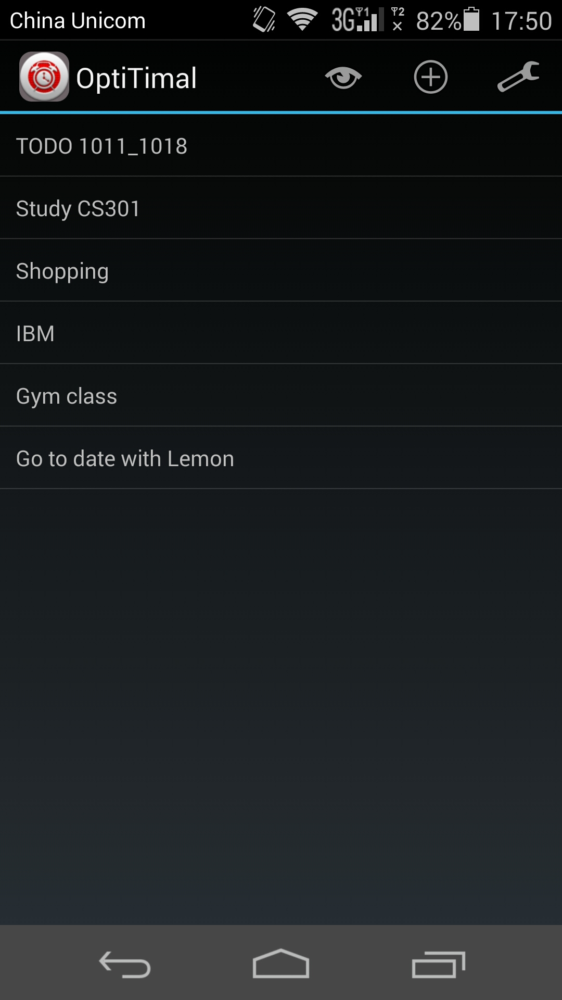
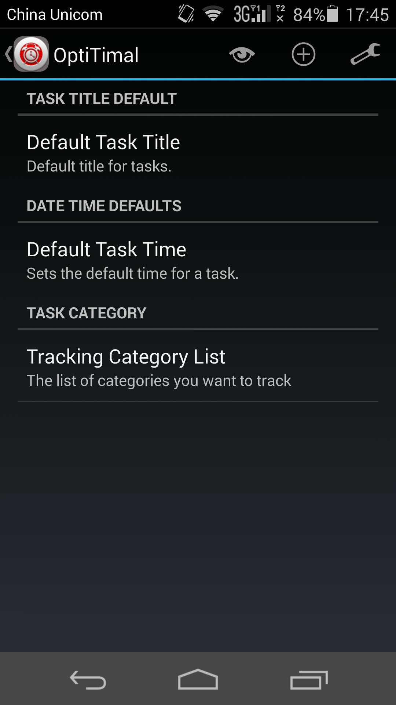
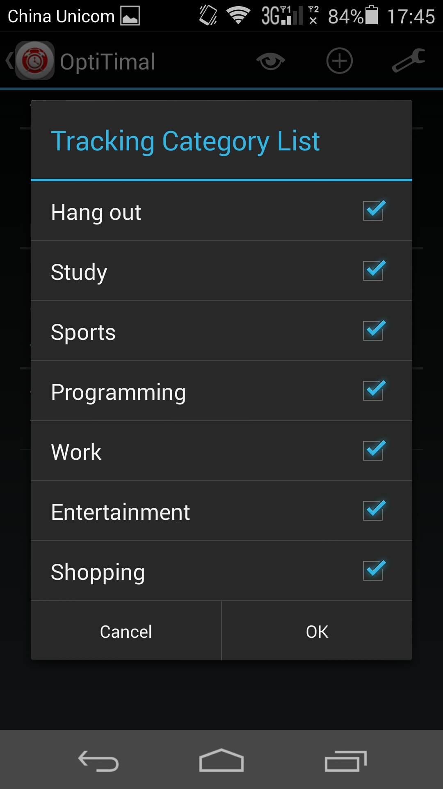
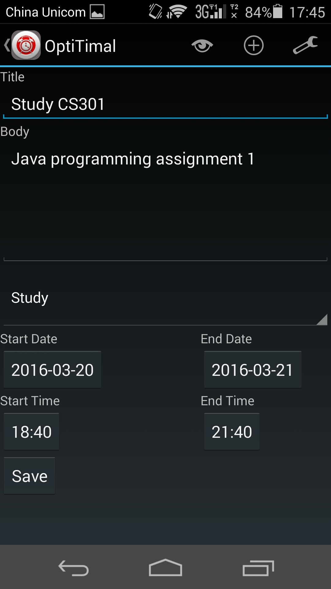
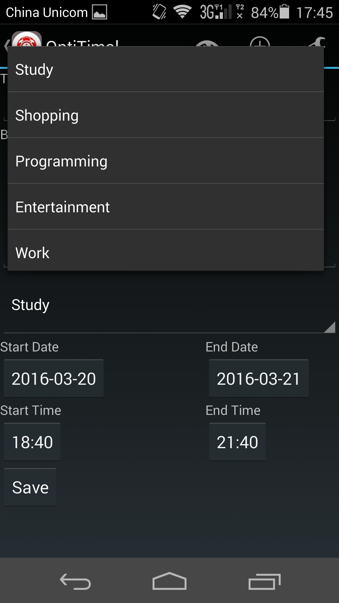
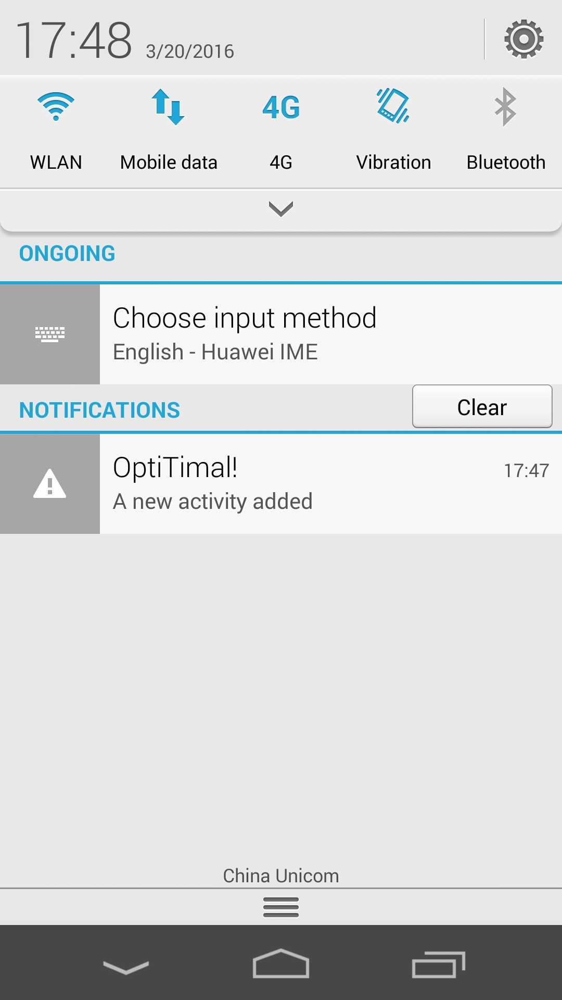
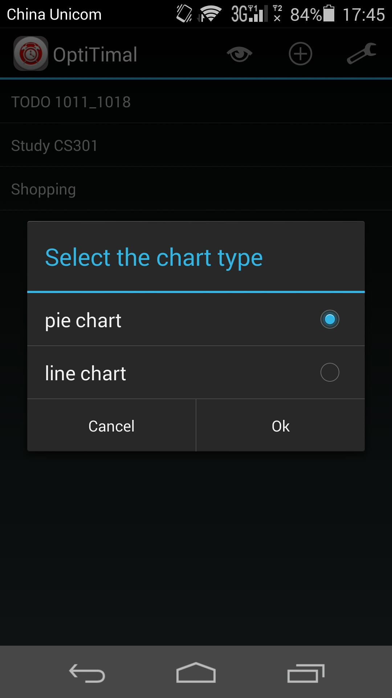
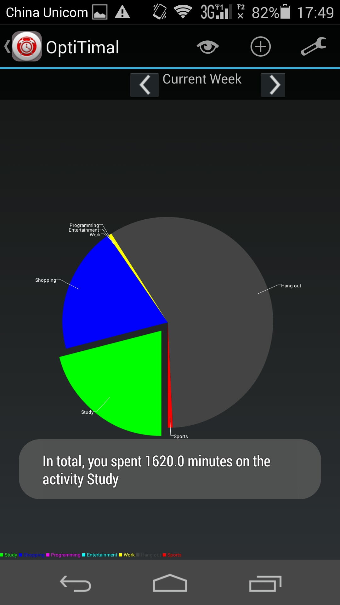
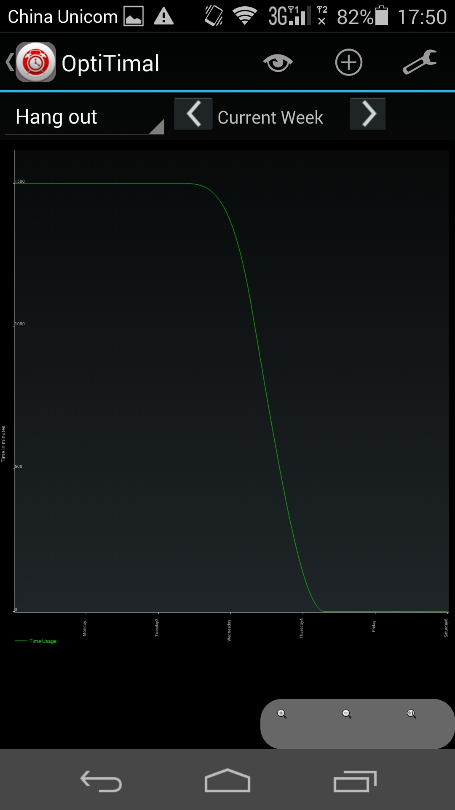

OptiTimal¶
Last Update: March 20, 2016
What is OptiTimal? Why this name?¶
OptiTimal is a time management app on Android platform. The goal behind this app is to help users optimize their time usage on the phone. So, \(OptiTimal = optimal + time\)
Features¶
Clean, straightforward graphic design
OptiTimal is a time management app. I don’t want you to waste anytime on the app itself. So, everything is kept simple and easy to figure out.
  {kind=link}
{kind=link}
{kind=link}
Simple but sufficient tools to meet complex daily todo task managment needs
The task page is kept simple but it’s poweful enough to allow you record any todo task that you may encounter. Also, a todo task can never get easily missed!
  {kind=link}
{kind=link}
{kind=link}
Time, Time, Time!
Time is valuable resource to you and OptiTimal provides a straightforward way to help you analyze your past time usage, and help you improve your time utilization. OptiTimal offers you pie chart and line chart to help you better understand what keeps you occupied the most. Furthermore, OptiTimal comes with multiple categories to allow you further customize on what kind of todo tasks you want to track.
  {kind=link}
{kind=link}
{kind=link}